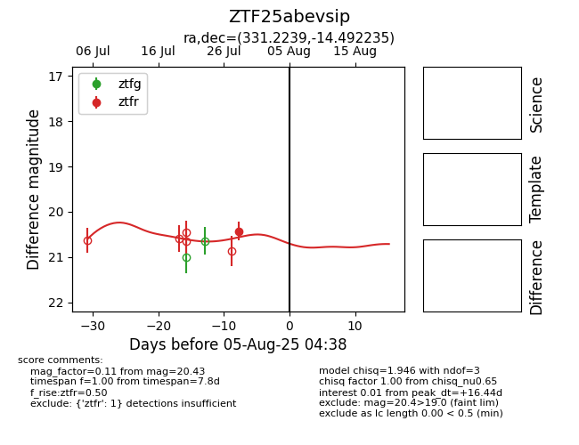

Target ZTF25abevsip at 2025-08-05 04:38, see:
FINK: fink-portal.org/ZTF25abevsip
Lasair: lasair-ztf.lsst.ac.uk/objects/ZTF25abevsip
ALeRCE: alerce.online/object/ZTF25abevsip
alt names
ZTF25abevsip (ztf,fink)
coordinates:
equatorial (ra, dec) = (331.2239,-14.49223)
galactic (l, b) = (42.3965,-49.29783)
photometry
last ztfr=20.43
1 ztfr detections
